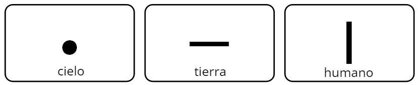

Gramática: creando las vocales
Antes de sumergirnos en los matices de las vocales, es esencial entender un concepto clave: el coreano es una lengua aglutinante. Esto implica que las palabras se forman mediante la adición de partículas a los sustantivos y expresiones a los verbos. Pero, ¿cómo se relaciona esto con la creación de las vocales? ¡Resulta que tiene una conexión fundamental!
En coreano, la estructura aglutinante significa que las palabras no son entidades fijas, sino construcciones dinámicas que evolucionan mediante la adición de morfemas.
Ahora, te preguntarás por qué es vital entender la formación de vocales en este contexto. La respuesta es simple: al comprender cómo se crean las vocales simples y los diptongos, adquieres una base sólida para comprender cómo se incorporan estos elementos a los sustantivos (partículas) y verbos (expresiones) durante la formación de palabras.
Creación de las vocales
El Hangul se trata de un alfabeto lógico que sigue la esencia taoísta adoptada por el neo-confuncionismo del Ying y el Yang:
- Una línea horizontal, del horizonte, que representa la tierra, el yin ㅡ
- Una línea vertical que representa al ser humano, el mediador entre el cielo y la tierra, el yang ㅣ
- Un punto que simboliza el Sol, ㆍ (que en el Hangul moderno se ha transformado en una línea corta -)

NOTA* Esta teoría, respaldada por la mayoría de los lingüistas, sugiere que estas representaciones dieron origen a las letras básicas del Hangul.
Entonces, ¿cómo se crearon estas vocales?
El Hangul está compuesto por 21 vocales : 6 simples, 4 iotizadas y 11 diptongos.
En esta actividad, tendrás la oportunidad de experimentar cómo se forman las vocales mediante la combinación de sus elementos básicos. Es decir, como se crean los 자모 (Jamos en inglés, en español debería leerse /chamo/) de las 6 vocales simples.
Los 자모 son las unidades básicas de escritura en el sistema de escritura coreano, que es el Hangul. Cada jamo representa una letra completa en el alfabeto coreano, ya sea una consonante o una vocal. Estos 자모 se combinan para formar sílabas y palabras en el idioma coreano.